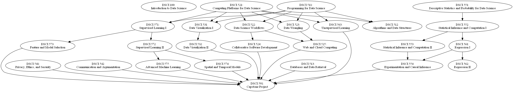

ScrapyBelow is a prerequisite chart for the 25 MDS courses:

In this assignment, you will reproduce this graph, or something very similar, by scraping the prerequisite info from https://courses.students.ubc.ca/cs/courseschedule?tname=subj-department&campuscd=UBCO&dept=DATA&pname=subjarea.
In this assignment, you will implement a simple crawler, using Scrapy, to crawl and scrape UBC SSC web pages to grab your course schedule.
You can install Scrapy with conda install scrapy or pip install scrapy. Here is a link to scrapy documentation. Additionally, you will need to install html5lib and json packages via the commands: pip install html5lib and pip install json.
This exercise is broken into the following steps:
You will use Scrapy's built in command to generate the crawler folder structure. In the command line (using interfaces such as Terminal in OS X), type scrapy startproject prereq_project.
This will generate a directory named prereq_project under your current directory.
Create a new python file, name it spider.py and save it under prereq_project/spiders/ directory. You may fill in the file with the code below:
import scrapy
import html5lib
from bs4 import BeautifulSoup
class MySpider(scrapy.Spider):
name = "mySpider"
allowed_domains = ["ubc.ca"]
start_urls = [
"https://courses.students.ubc.ca/cs/courseschedule?tname=subj-department&campuscd=UBCO&dept=DATA&pname=subjarea"
]
custom_settings = {
'USER_AGENT': 'Mozilla/5.0 (Macintosh; Intel Mac OS X 11_1) AppleWebKit/537.36 (KHTML, like Gecko) Chrome/87.0.4280.141 Safari/537.36',
}
def __init__(self):
self.log_file = open('log_file', 'w')
def parse(self, response):
soup = BeautifulSoup(response.text, 'html5lib')
return
def parse_course_details(self, response):
passThe spider requires specification of the name, domain that it is allowed to crawl, and a list of URLs from which the spider is to begin crawling. You can run the crawler with the following command (although it will do nothing):
scrapy crawl mySpider
The scrapy crawler works by sending an HTTP request for each URL in the start_urls field. Once it receives a response, the default callback function, parse(response), is invoked with a Response object passed into the function.
Your task in this step is to complete the implementation of the parse(response) function so that you can retrieve the list of all data science courses (DATA 5XX) as well as the links to the course details. The first step of creating a BeautifulSoup object, soup to parse the response has been completed for you.
We recommend you to use self.log_file to output the list of courses that you retrieved -- this will be helpful as you debug your code.
Scrapy provides a mechanism for structuring the scraped data using Items.
You will define your own Item class by subclassing Scrapy's Item class. Open prereq_project/items.py. The file contains a simple definition of TestItem class. You may rename the class to CourseItem.
Item class comes with a default Field object, which is essentially a Python dictionary. We want to declare two fields: course_name and url_link.
Now, modify the spider.py, in particular, parse(response) function to use CourseItem class and store the course name and the links in the fields that you just created. Once you are done, run the crawler via the command,
scrapy crawl mySpider -o courses.json
Check the courses.json file to ensure that your implementation is correct.
To retrieve the prerequisite for each of the courses, you will need to follow the links associated with each of the courses. This requires you to make an HTTP Request.
Your task here is to make an HTTP request on each of the links for each of the courses that you retrieved from Steps 2 and 3, and fill out the second callback function, parse_course_details(response), to retrieve the prerequisities for each of the courses.
Output the retrieved course pre-requisite to the courses.json file. Note that you will have to change items.py file as you will need to store the list of prerequisite courses.
Use the Python wrapper around graphviz to turn this into a picture. You should have graphviz but you may need to install the Python wrapper, which can be achieved with conda install graphviz.
Zip the entire project and submit the code. Make sure that we can run your code by running from our command line:
scrapy crawl mySpider -o courses.json